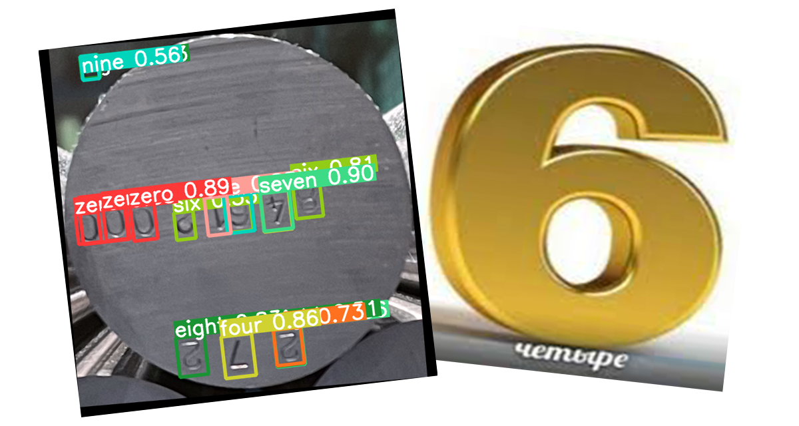
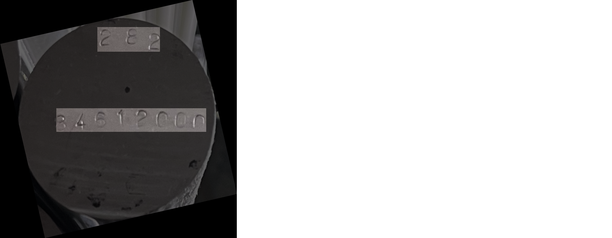

Распознавание серийных номеров на металлических заготовках
Команда проекта: Георгий Ангени, Ася Пределина, Марат Мовсин
Проблема
У нас есть
- металлические заготовки (прутки) с серийными номерами на торцах;
- эксперт, который сортирует металлические заготовки по серийным номерам.
Но! Человеческий фактор никто не отменял, поэтому эту рутинную работу хочется доверить некоторому алгоритму.
Цель проекта
Нужно разработать "конвейер", который
- обнаруживает отдельные прутки на фотографии;
- находит текст на каждом прутке и преобразовывает его в набор строчек;
- отбрасывает некачественные фотографии и возвращает неудовлетворенный критерий.
И делать это нужно быстро!
(в идеале за 1 секунду на фотографию)
Наше решение
- глобальная проверка качества с использованием общих признаков;
- детекция прутков на фотографии;
- глобальная проверка качества с использованием признаков, основанных на данных, полученных при детекции;
- локальная проверка качества;
- приведение текста на отдельных прутках в горизонтальное положение путем поворота;
- поиск текста на прутках (одно из двух):
- поиск отдельных цифр и сборка строк,
- optical character recognition (OCR).
Критерии качества
В "конвейере" применяются следующие критерии:
- средняя яркость по пикселям изображения;
- средний квадрат колебания яркости в малых окрестностях (STA6 в этой статье);
- количество прутков на фотографии;
- взвешенная сумма расстояний от центров прутков до центра фото;
- площадь выделенных прутков;
- отношение ширины bounding box-а к высоте.
До детекции: отсеиваем сильный засвет и нечеткие изображения
После детекции: прутков очень много, их нет совсем или
они на краях
Локальная проверка: засвет и нечеткость, вытянутые
bounding box-ы и прутки малой площади
Детекция прутков и символов
Используется модель YOLOv5 из семейства YOLO. Причины:
- очень быстрый inference;
- максимально user-friendly документация и огромное количество полезных примочек “из коробки”: аугментации, мониторинг с помощью W&B и т.д.

Поворот прутков
Процесс поворота делится на следующие этапы:
- детекция областей с текстом с помощью модели U-Net;
- уменьшение размеров полученной маски;
- нахождение самой большой связной области с текстом при помощи DBSCAN;
- определение угла наклона путем минимизации дисперсии проекции маски;
- поворот изображения на угол, определенный на
предыдущем этапе.
Optical Character Recognition (OCR)
Двухэтапная реализация:
- детекция строчек с номерами с помощью модели YOLOv5;
- распознавание серийных номеров: используется предобученная модель Rosetta (ResNet + CTC).

Генерация дополнительных данных для обучения OCR
Для улучшения качества OCR были сгенерированы дополнительные данные. Генерация включала в себя
- генерацию случайных последовательностей цифр;
- генерацию отдельных цифр при помощи генеративно-состязательной модели (GAN);
- выбор наиболее подходящих друг другу цифр;
- гладкое склеивание выбранных цифр при помощи
пирамид Лапласа.
Слайд “для внимательных”
Q: Но позвольте! Пусть даже если мы обрабатываем хорошее изображение с параллельными друг другу строками, модель поворота может привести снимок в два положения, отличающиеся друг от друга ровно на 180 градусов. Как быть?
A: Отличный вопрос! Казалось бы, решение проще некуда, давайте сравним суммы значений confidence.
Причины, по которым это работает:
- модель очень редко ловит цифры “из воздуха”, поэтому мы верим, что чем больше их найдено на картинке, тем больше
шанс того, что она истинная;
- модель слегка привередлива к шрифту, поэтому
перевернутые цифры могут дать confidence ниже.
Сравнение эффективности подходов
|
master |
experimental |
experimental
+ ocr |
| Время на ноутбуке |
9 s/img |
5.6 s/img |
5.1 s/img |
| Время на ПК с GPU |
3.8 s/img |
1.49 s/img |
1.46 s/img |
|
нужна YOLOv5 |
нагрузка на ОЗУ |
нагрузка на ОЗУ
|
Сравнение качества подходов
Используется метрика качества Character Error Rate (CER).
|
Детекция и компоновка |
Поиск областей и OCR |
| Отобранные фото |
0.358 |
0.275 |
| Общие фото |
0.269 |
0.253 |
| Хорошие фото |
0.007 |
0.044 |
| Плохие фото |
0.536 |
0.435 |
Также стоит отметить, что "конвейер" с OCR на последнем
этапе совершает больше отбрасываний некачественных
изображений.
Заключение
В ходе работы мы
- разработали промышленный продукт, который выполняет поставленную задачу достаточно быстро и с высокой точностью;
- рассмотрели, реализовали и сравнили два подхода к распознаванию текста: самописный и “из коробки”;
- изучили множество статей, тем самым углубив свои знания о компьютерном зрении, и получили прикладной опыт.